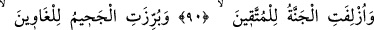
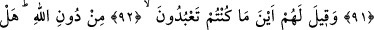
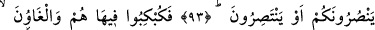
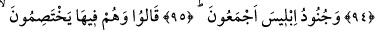
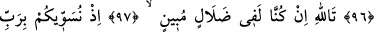
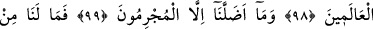
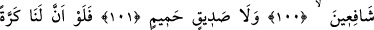
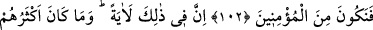
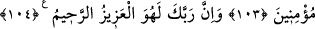
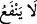

AH KEŞKE!..
DÜNYAYA BİR DÖNÜŞ
DAHA OLSA!..
90. (O gün) cennet, takvâ sahiplerine yaklaştırılır.
91. Cehennem de azgınlara apaçık gösterilir.
92. Onlara: “Allah’tan gayrı taptıklarınız hani nerede?” denilir.
93. Size yardım edebiliyorlar mı veya kendilerine (olsun) yardımları dokunuyor
mu?
94. Onlar ve azgınlar oraya tepetaklak (cehenneme) atılırlar.
95. İblîs’in bütün askerleri de...
96. Orada birbirleriyle çekişerek şöyle derler:
97. Vallahi, biz gerçekten apaçık bir sapıklık içindeymişiz.
98. Çünkü biz sizi âlemlerin Rabbi ile eşit tutuyorduk.
99. Bizi ancak o günahkârlar saptırdı.
100. Şimdi artık bizim ne şefaatçilerimiz var.
101. Ne de yakın bir dostumuz.
102. Ah keşke bizim için (dünyaya) bir dönüş daha olsa da, müminlerden olsak!
103. Bunda elbet (alınacak) büyük bir ders vardır; ama çokları iman etmezler.
104. Şüphesiz Rabbin, işte O, mutlak galip ve engin merhamet sahibidir.
“(O gün) cennet, takvâ sahiplerine yaklaştırılır.” Bu cümle, yukarıdaki “
”
cümlesine atfedilmiştir. Mâzî sıygası, vukuu kesin olduğunu ifade etmek içindir. Nitekim